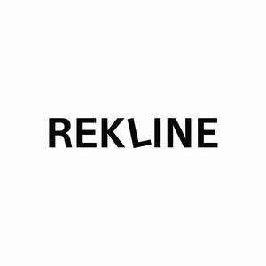

Trade Mark Journal No.2025/015 11 April 2025
UK00004181436 30 March 2025 (20,35)
Mark 1
REKLINE
Mark 2

- Class 20
- Furniture, mirrors, picture frames; sofas; sofa beds; extendible sofas; convertible sofas; wall sofas; modular sofas; sectional sofas; L-shaped sofas; U-shaped sofas; corner sofas; chaise lounges; love seats; sleeper sofas; sofa ottomans; sofa modules; sofa arms; sofa legs; sofa backs; sofa headrests; sofa frames (not of metal); sofa seats; modular seating units; adjustable sofas; custom-made sofas; upholstered sofas; fabric sofas; velvet sofas; suede sofas; leatherette sofas; bamboo sofas; rattan sofas; ergonomic sofas; memory foam sofas; outdoor sofas; bean bag sofas; sofas for pets; elastic straps (constituent parts of sofa seats); couches; settees; bed-settees; armchairs; office armchairs; reclining armchairs; seats; seat cushions; chairs [seats]; chair beds; chair cushions; lounge chairs; reclining chairs; cushions; beds, mattresses, pillows; indoor furniture; seating furniture; pouffes; leather furniture; lounge furniture; containers, not of metal, for storage or transport; unworked or semi-worked bone, horn, whalebone or mother-of-pearl; shells; meerschaum; yellow amber; animal housing and beds; containers, closures, and holders therefor, non-metallic; displays, stands, and signage, non-metallic; ladders and movable steps, non-metallic; statues, figurines, works of art, ornaments, and decorations made of wood, wax, plaster, or plastic; tables; TV stands; media units; entertainment units; footstools; pouffe stools; chaise sofas; modular seating systems; sectional seating furniture; U-shaped sectional sofas; L-shaped sectional sofas; reclining sectional sofas; armrest cushions; ottoman benches; storage ottomans; corner units for sofas; fabric armchairs; leather armchairs; home theatre seating; comfort chairs; padded seating; console tables; benches; computer tables; conference chairs; conference tables; contour chairs; convertible chairs; deck chairs; decorators' tables; dining chairs; dining tables; display tables; drafting chairs; drafting tables; dressing tables; folding chairs; folding tables; frames of non-metallic materials; frames for mirrors or pictures; curtain rings; curtain poles; garden furniture; garden furniture made of aluminium, metal, or wood; household furniture; kitchen tables; leather picture frames; mirrors enhanced by electric lights; racks made of plastics or wood for storage purposes; recliners; shaving mirrors; sideboard tables; soft furnishings cushions; swivel chairs; tables for use in gardens; wall mirrors; work chairs; work tables; writing tables; plastic furniture for gardens; pet sofas; pet cushions; portable beds for pets; bedroom furniture; cabinets; wardrobes; coat racks; desks; display furniture; chests; outdoor furniture; furniture for the physically handicapped, those of reduced mobility, and with disabilities; baskets; bookcases; book rests; boxes of wood or plastic; brackets, not of metal, for furniture; cabinet work; carts for computers; clothes hooks, not of metal; coat stands; counters [furniture]; display boards; display stands; knobs, not of metal; lap desks; lecterns; legs for furniture; library shelves; lockers; magazine racks; mattresses; medicine cabinets; nuts, not of metal; pegs; pins, not of metal; pillows; placards of wood or plastics; plugs, not of metal; racks; rivets, not of metal; school furniture; screws, not of metal; seats of metal; shelves for file cabinets or storage; shelving units; showcases; sleeping mats; standing desks; clothes hangers; plastic, paper, or cardboard hangers; garment, trousers, towel, sock, tights, foulard, handkerchief, belt, shoe, cap, scarf, tie, and glove hangers; hooks; hooks with adhesive; parts and fittings of the aforesaid goods.
- Class 35
- Advertising, marketing, promotional services; online and offline wholesale and retail services in relation to the sale of furniture, mirrors, picture frames, sofas, sofa beds, extendible sofas, convertible sofas, wall sofas, modular sofas, sectional sofas, L-shaped sofas, U-shaped sofas, corner sofas, chaise lounges, love seats, sleeper sofas, sofa ottomans, sofa modules, sofa arms, sofa legs, sofa backs, sofa headrests, sofa frames (not of metal), sofa seats, modular seating units, adjustable sofas, custom-made sofas, upholstered sofas, fabric sofas, velvet sofas, suede sofas, leatherette sofas, bamboo sofas, rattan sofas, ergonomic sofas, memory foam sofas, outdoor sofas, bean bag sofas, sofas for pets, elastic straps (constituent parts of sofa seats), couches, settees, bed-settees, armchairs, office armchairs, reclining armchairs, seats, seat cushions, chairs [seats], chair beds, chair cushions, lounge chairs, reclining chairs, cushions, beds, mattresses, pillows, indoor furniture, seating furniture, pouffes, leather furniture, lounge furniture, containers, not of metal, for storage or transport, unworked or semi-worked bone, horn, whalebone or mother-of-pearl, shells, meerschaum, yellow amber, animal housing and beds, containers, closures, and holders therefor, non-metallic, displays, stands, and signage, non-metallic, ladders and movable steps, non-metallic, statues, figurines, works of art, ornaments, and decorations made of wood, wax, plaster, or plastic, tables, TV stands, media units, entertainment units, footstools, pouffe stools, chaise sofas, modular seating systems, sectional seating furniture, U-shaped sectional sofas, L-shaped sectional sofas, reclining sectional sofas, armrest cushions, ottoman benches, storage ottomans, corner units for sofas, fabric armchairs, leather armchairs, home theatre seating, comfort chairs, padded seating, console tables, benches, computer tables, conference chairs, conference tables, contour chairs, convertible chairs, deck chairs, decorators' tables, dining chairs, dining tables, display tables, drafting chairs, drafting tables, dressing tables, folding chairs, folding tables, frames of non-metallic materials, frames for mirrors or pictures, curtain rings, curtain poles, garden furniture, garden furniture made of aluminium, metal, or wood, household furniture, kitchen tables, leather picture frames, mirrors enhanced by electric lights, racks made of plastics or wood for storage purposes, recliners, shaving mirrors, sideboard tables, soft furnishings cushions, swivel chairs, tables for use in gardens, wall mirrors, work chairs, work tables, writing tables, plastic furniture for gardens, pet sofas, pet cushions, portable beds for pets, bedroom furniture, cabinets, wardrobes, coat racks, desks, display furniture, chests, outdoor furniture, furniture for the physically handicapped, those of reduced mobility, and with disabilities, baskets, bookcases, book rests, boxes of wood or plastic, brackets, not of metal, for furniture, cabinet work, carts for computers, clothes hooks, not of metal, coat stands, counters [furniture], display boards, display stands, knobs, not of metal, lap desks, lecterns, legs for furniture, library shelves, lockers, magazine racks, mattresses, medicine cabinets, nuts, not of metal, pegs, pins, not of metal, pillows, placards of wood or plastics, plugs, not of metal, racks, rivets, not of metal, school furniture, screws, not of metal, seats of metal, shelves for file cabinets or storage, shelving units, showcases, sleeping mats, standing desks, clothes hangers, plastic, paper, or cardboard hangers, garment, trousers, towel, sock, tights, foulard, handkerchief, belt, shoe, cap, scarf, tie, and glove hangers, hooks, hooks with adhesive.
MoonStar Global FCZO
Representative: Trade Mark Wizards Limited